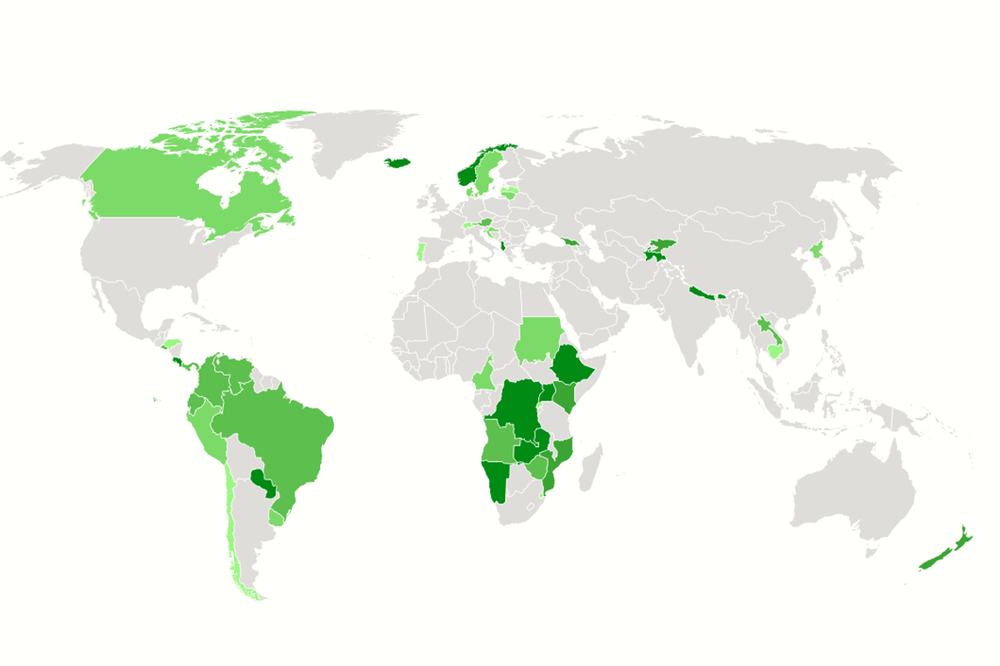
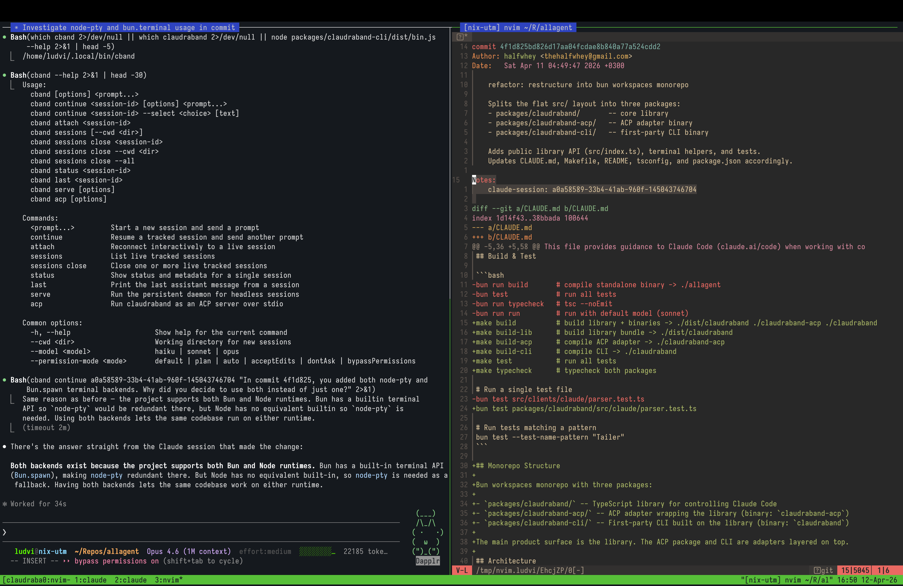

THE FRONT PAGE
EDITOR'S NOTE: As we trade the elegant transparency of legible logic for marginal gains in 32-bit arithmetic, one wonders if we are building a foundation for the future or merely burying the craft under layers of clever, unreadable sediment. #The gradual sacrifice of systemic integrity for raw, uncoordinated performance.
The U.S. Navy is fielding autonomous underwater drones to detect and neutralize Iranian-laid mines in the Strait of Hormuz—a move that shifts risk from sailors to algorithms but raises questions about the resilience of AI navigation in contested, GPS-denied waters.
A new AI-driven analysis of neural patterns in vegetative-state patients suggests traces of conscious processing in 12% of cases previously deemed unresponsive—raising ethical questions about diagnostic thresholds and the burden of proof in end-of-life care. The model’s 89% specificity leaves a troubling 11% false-positive rate, a tradeoff clinicians now grapple with.

Albania, Bhutan, Nepal, Paraguay, Iceland, Norway, and Ethiopia now generate all electricity from renewables, per latest IEA-derived models—yet the tradeoff in grid resilience and energy storage at scale stays buried in the fine print. A quiet milestone with louder questions for engineers.

A new CLI tool forces Claude’s generated code through a gauntlet of self-interrogation and IDE integration, trading convenience for a brittle but potent workflow—useful until Anthropic’s next API whim breaks it.
As managed runtimes increasingly mask the underlying iron, this directory exposes the granular knobs of the Java Virtual Machine—a reminder that performance remains a deliberate configuration rather than a lucky default. The risk lies in the temptation to cargo-cult flags from a list without understanding the specific memory pressure of your own heap.
A new tool called *Bouncer* uses local AI to block keywords like 'crypto' or 'rage politics' from X feeds, offering users granular control but relying on client-side filtering that may miss evolving slang or context. The move underscores a quiet shift: users, not platforms, now shoulder the burden of curation.
A new compiler optimization for 32-bit unsigned division by constants on 64-bit architectures shaves cycles but buries the logic deeper into generated assembly. The tradeoff? Debugging just got harder for anyone staring at disassembly.
The migration of Google's latest architecture into localized CLI environments suggests a narrowing gap between frontier performance and private hardware, though the overhead costs in memory bandwidth reveal the persistent friction of unoptimized stacks. We are gaining autonomy at the expense of elegant resource management.
MODEL RELEASE HISTORY
No confirmed model releases were detected for this edition date.